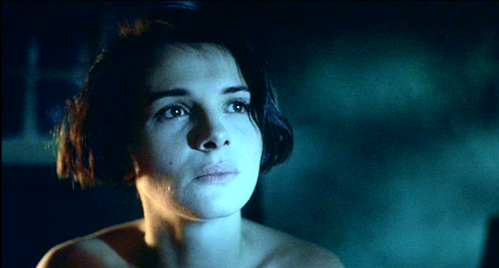

Hakkımızda
Sitemizin Kurucusu Burak Gülmez'in En Çok Sevdiği Yönetmenlerden Krzysztof Kieślowski'nin Üç Filmi
Merhabalar, bugünkü yazımda size sevdiğim yönetmenin sevdiğim üç filminden bahsedeceğim.
Krzysztof Kieślowski Kimdir?
Krzysztof Kieślowski; 27 Haziran 1941 - 13 Mart 1996), Polonyalı film yönetmeni ve senaryo yazarı.
En bilinen filmleri Üç Renk üçlemesi (1993-1994), Dekalog (1989) serisi ve Véronique'in İkili Yaşamı (1991) adlı filmidir.
Krzysztof Kieślowski'nin en çok sevdiğim üç filmi.
- Three Colors:Blue(Üç Renk Mavi) Bu linkten bu filme ulaşabilirsiniz.
- A Short Film About Love(Aşk Üzerine Kısa Bir Film) Bu linkten bu filme ulaşabilirsiniz.
- Bez końca(Sonsuz) Bu linkten bu filme ulaşabilirsiniz.